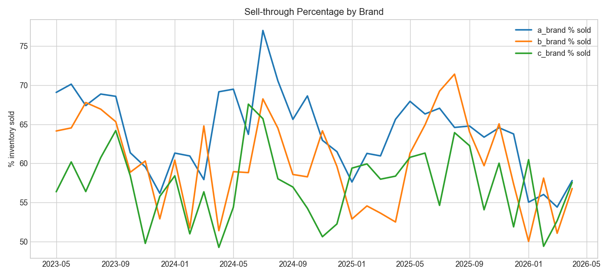

Brick N' Mortar merchant - inventory forecasting starter
This project uses one generated monthly XLSX data source with 36 rows (one row per month) across a-brand, b-brand, and c-brand. Each row includes inventory, sales, sell-through percentage, month-over-month changes, and same-month-last-year comparisons.
What this demonstrates
- Single source of truth in
DA-Prediction/data/inventory_sales_source.xlsx. - Messy but realistic synthetic data with trend, seasonality, and random shocks.
- Brand-level and total KPI calculations for sell-through, MoM, and YoY changes.
- Simple two-month forecast and scenario band based on recent trend behavior.
Charts (generated with pandas + matplotlib)

